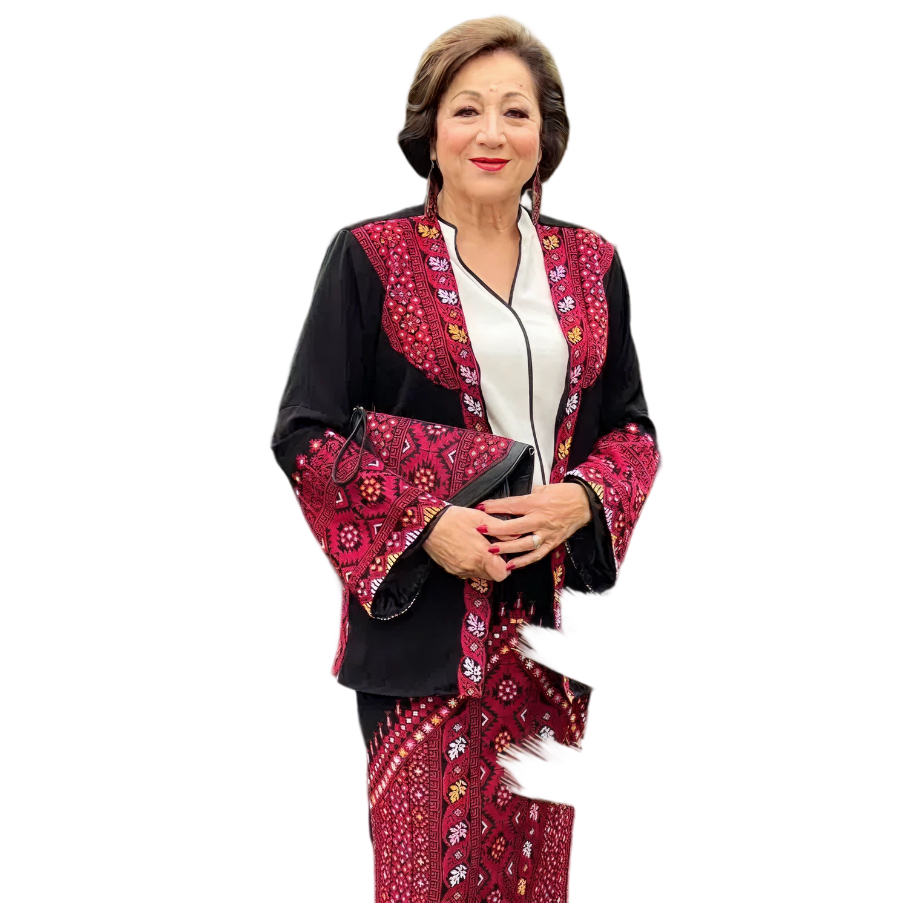
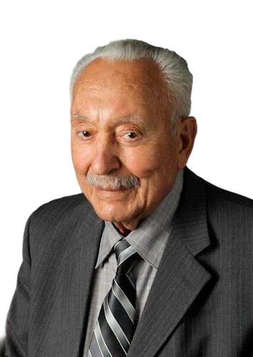
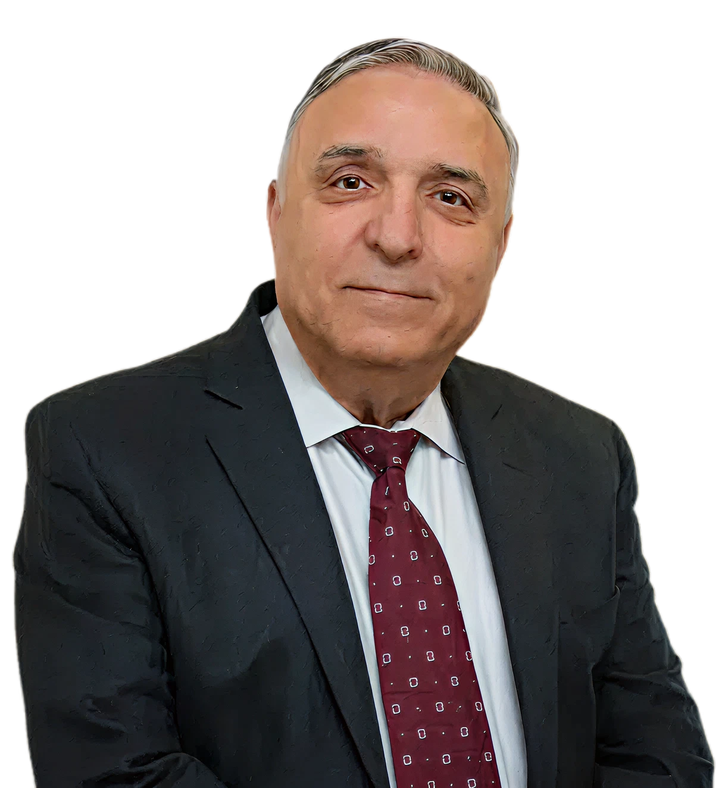
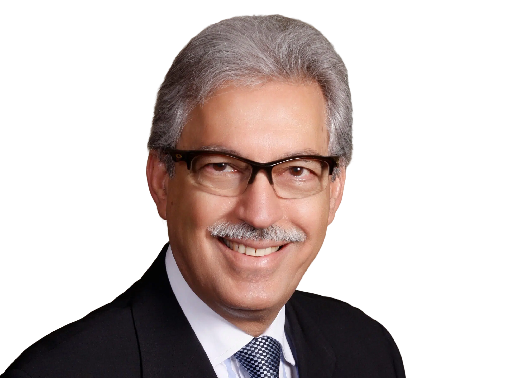

Join us in our mission by participating in events, volunteering, or contributing to our outreach efforts and community support.

Immediate former President
she has been active since the association’s founding in 1986. In addition to her work with PAWA, she was a leading board member of Al-Awda and the Los Angeles chapter of ADC, representing Al-Awda at the UNESCO International Conference in Paris in 2008. In 2004, she participated in a fact-
Immediate former President
Tawfik Ramadan is currently a pediatrician at Southern Oklahoma Pediatrics, a private practice, and neonatology director of the NICU (Neonatal Intensive Care Unit) at Valley View Regional Hospital in Ada, Oklahoma. He was also director in the development and establishment of a pediatric ward and NICU at Valley View Regional Hospital. Dr. Ramadan has been a medical officer in Palestine and Jordan for UNRWA (United Nations Relief and Works Agency).
Rajai Khoury
Dr. Khoury established and presided over the Khoury Surgical Group, Khoury Surgical Associates, Khoury Vascular and Vein, and The Vein Clinic of the Ohio Valley. He served on the boards of multiple healthcare establishments and continues to be an advisor and a medical volunteer with multiple organizations. Currently, he is in the practice of vein and vascular medicine along with medical community development under Wheeling Hospital, a division of West Virginia University Medicine.
Vice-Chairman and Treasurer
received the Resident of the Year award, and attained plastic surgery training at Brown University in Providence, Rhode Island. Dr. Mustafa is in private practice in Wichita Falls, Texas, where he is chief of plastic surgery at United Regional Health Care System and at Kell West Regional Hospital. He served as President of the Wichita County Medical Society, Vice President of the Texas Rehabilitation Commission Medical Committee, and as Treasurer, Vice President, and President of the National Arab American Medical Association (NAAMA)